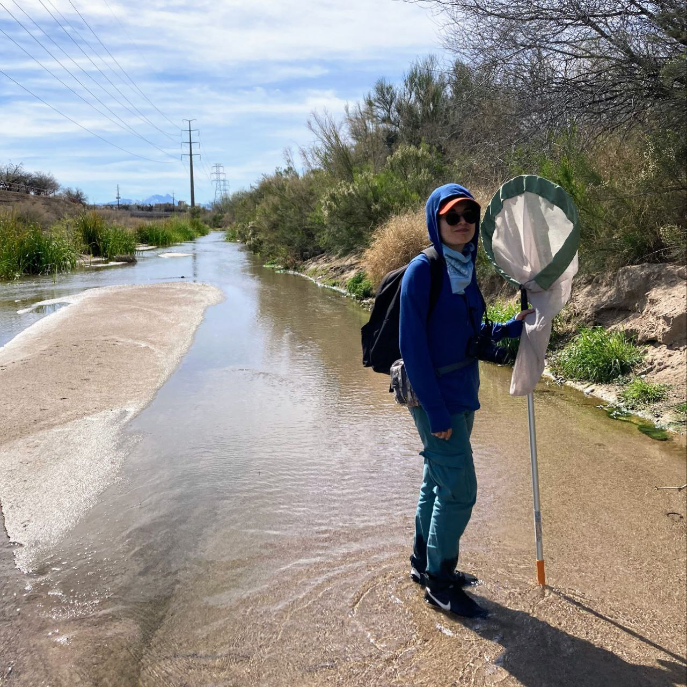

M. C. Rocío Jazmín Guzmán Ojeda
Soy ecóloga. Principalmente me interesa entender cómo las poblaciones y comunidades de fauna silvestre son afectadas por perturbaciones en sus interacciones ecológicas, especialmente macroinvertebrados acuáticos, como las libélulas.Actualmente soy estudiante de doctorado en Recursos Naturales (énfasis en Conservación y Manejo de Fauna Silvestre) en el Laboratorio de Ecología Acuática en la Universidad de Arizona. Formo parte de los esfuerzos de divulgación en el Río Santa Cruz, incluyendo el Festival de la Libélula.
Educación
- Maestría en Ciencias Biológicas. 2020. Instituto de Biología, Universidad Nacional Autónoma de México.
- Licenciatura en Ecología. 2016. Universidad Estatal de Sonora.